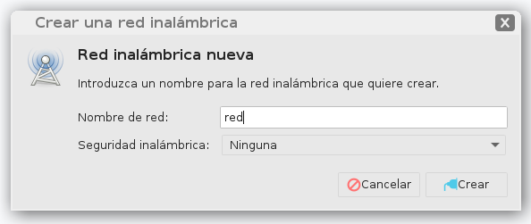
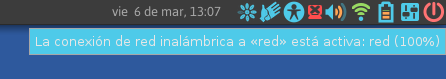

Desde este asistente vas a poder configurar una red local sin necesidad de estar conectado a internet o a la red escolar.
Pulsá el siguiente botón para iniciar el asistente de configuración.
Te damos algunos consejos para configurar la red rápidamente:
- Esta red local se construye desde una netbook (anfitrión) y se puede acceder desde una o más netbooks.
- En el asistente de configuración elegí un nombre sencillo y marcá “Ninguna” en Seguridad Inalámbrica. Por ejemplo:

- En ese momento vas a ver que la netbook se va a desconetcar de las otras redes a las que esté conectada (Internet por Wifi, Internet por Cable. Red Escolar, etc.). Esto lo vas a ver en el icono de redes del Panel Superior.
- Tomará unos segundos y se conectará a la red local generada (llamada “red” en este ejemplo).

- La/s netbook/s que quieran conectarse a esta red local para poder compartir archivos deberán elegirla también desde el icono de redes del Panel Superior.
- Tené en cuenta que vas a quedar conectado a esa red local. Si querés volver a utilizar la red a la que estabas conectado anteriormente, tendrás que seleccionarla nuevamente.